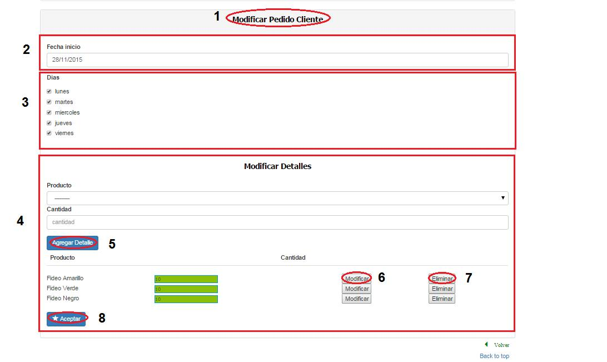
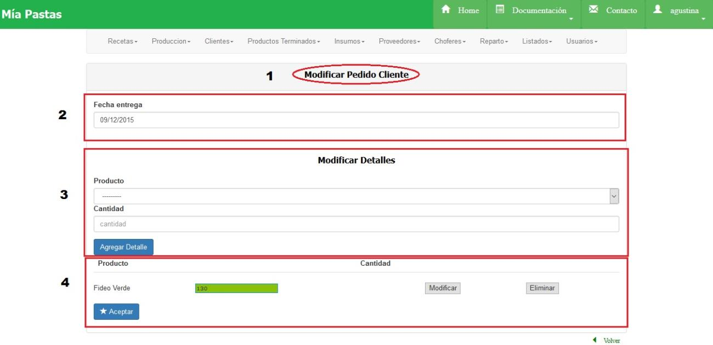

Modificar Pedidos de Clientes¶
Modificar Pedidos Fijos de Clientes¶
- Nombre de la sección en la que nos ubicamos, (2) fecha de inicio del pedido, (3) días de entrega del pedido, (4) detalles del producto a agregar y cantidad, listado de todos los productos agregados con su cantidad.
- Observaciones: No se puede eliminar un día del pedido fijo si éste es el único día.
Modificar Pedidos Ocasionales o por Cambio de Clientes¶
- Nombre de la sección en la que nos ubicamos, (2) fecha de entrega del pedido, (3) detalle del producto a agregar al pedido con su cantidad, (4)detalles de todos los productos agregados y su cantidad.
- Observaciones: No se pueden modificar pedidos que ya fueron recepcionados.